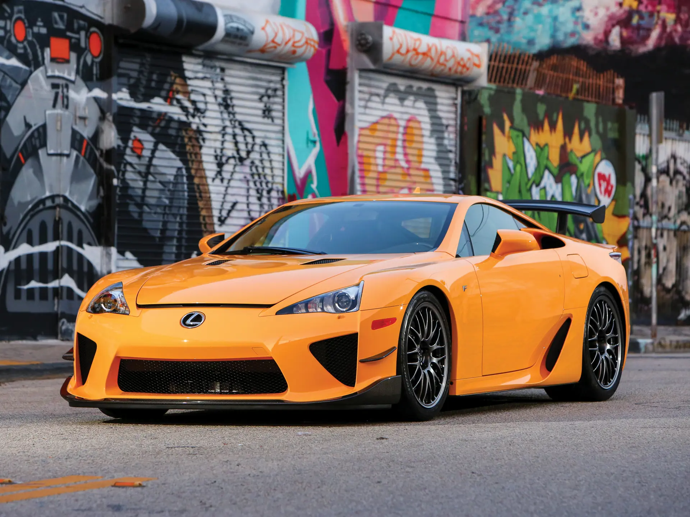
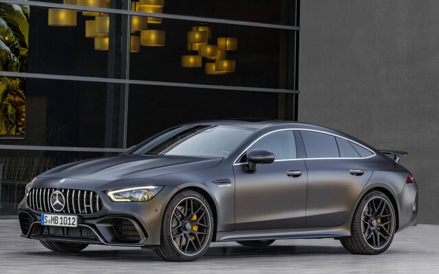
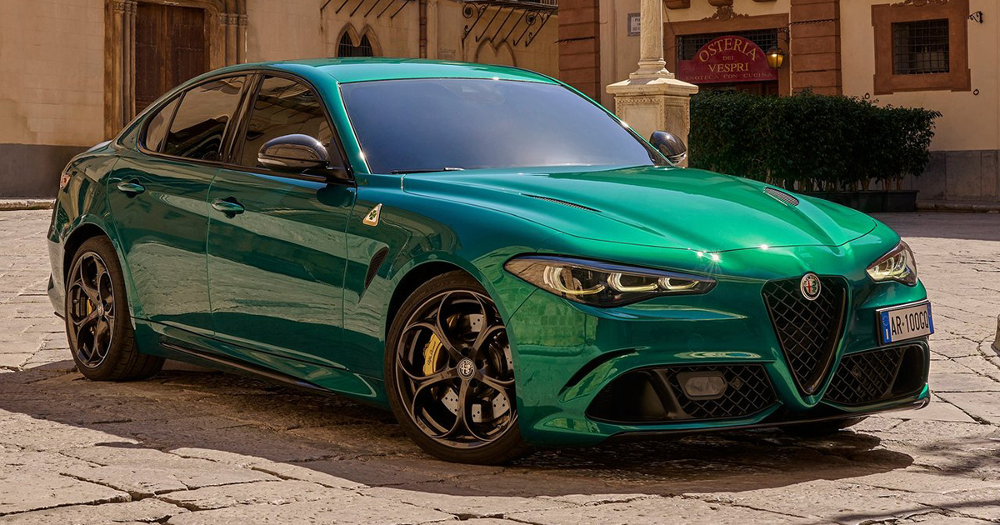

Introduction
Luxury cars are the epitome of comfort, performance, and cutting-edge technology. In 2025, several models have stood out as the best in their class. Here’s a closer look at the top 5 luxury cars of the year.
1. LUXUS LFA
The Lexus LFA is a rare and legendary supercar manufactured by Lexus, the luxury division of Toyota. Produced between 2010 and 2012, only 500 units were made worldwide, making it highly collectible and exclusive.
- Engine: 4.8L V10 – 552 horsepower
- Top Speed: 325 km/h (202 mph)
- 0-100 km/h: 3.7 seconds
- Original Price: $375,000+ (now can exceed $1M)
Known for its breathtaking engine sound, stunning design, and Formula 1-inspired engineering, the LFA is considered one of the finest Japanese supercars ever built.
2. MERCEDES GT63S
The Mercedes-AMG GT 63 S is a high-performance luxury four-door coupe designed by Mercedes-AMG. It combines breathtaking speed with everyday comfort, making it one of the most versatile super sedans in the world.
- Engine: 4.0L V8 Biturbo – 639 horsepower
- Top Speed: 315 km/h (196 mph)
- 0-100 km/h: 3.2 seconds
- Drive: 4MATIC+ all-wheel drive
The GT 63 S delivers explosive power, aggressive design, and luxurious tech inside, offering both thrill and elegance in one incredible package.
3. Audi RS6

The Audi RS6 Avant is a high-performance sports wagon that blends supercar power with everyday practicality. Built by Audi Sport, it's known for its aggressive look, cutting-edge tech, and powerful performance.
- Engine: 4.0L V8 Biturbo – 600 horsepower
- Top Speed: Up to 305 km/h (189 mph)
- 0-100 km/h: 3.6 seconds
- Drive: Quattro all-wheel drive
The RS6 is a beast in a family car's body — delivering raw performance while still offering space, comfort, and that signature Audi refinement.
4.BMW M5 COMPETITION
The BMW M5 Competition is a high-performance sports sedan that combines luxury, technology, and raw power. It's engineered by BMW M to deliver track-ready performance with everyday comfort and style.
- Engine: 4.4L V8 Twin-Turbo – 625 horsepower
- Top Speed: 305 km/h (189 mph)
- 0-100 km/h: 3.3 seconds
- Drive: M xDrive all-wheel drive
With its sharp handling, aggressive styling, and cutting-edge technology, the M5 Competition stands as one of the most powerful and refined super sedans on the market.
5. ALFA ROMEO GUILIA QUADRIFOGLIO
The Alfa Romeo Giulia Quadrifoglio is a high-performance Italian sports sedan that combines elegant design, thrilling performance, and racing heritage. It's the crown jewel of Alfa Romeo's Giulia lineup.
- Engine: 2.9L Twin-Turbo V6 – 510 horsepower
- Top Speed: 307 km/h (191 mph)
- 0-100 km/h: 3.9 seconds
- Drive: Rear-wheel drive (Q4 version offers AWD)
Developed with help from Ferrari engineers, the Giulia Quadrifoglio delivers precision, speed, and soul — all wrapped in a sleek and stylish Italian body.
Conclusion
These luxury cars represent the pinnacle of automotive engineering and design. Whether you prioritize performance, comfort, or technology, these models have something to offer.